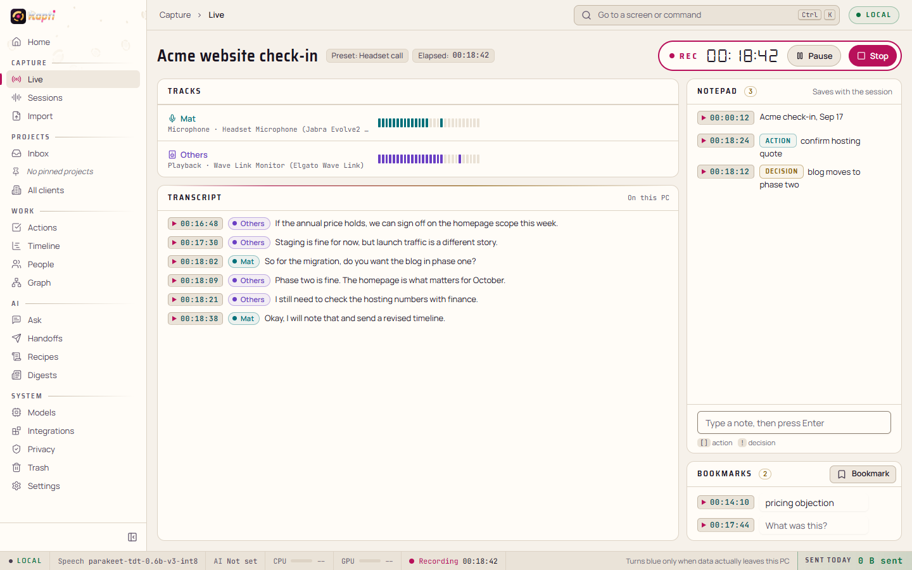
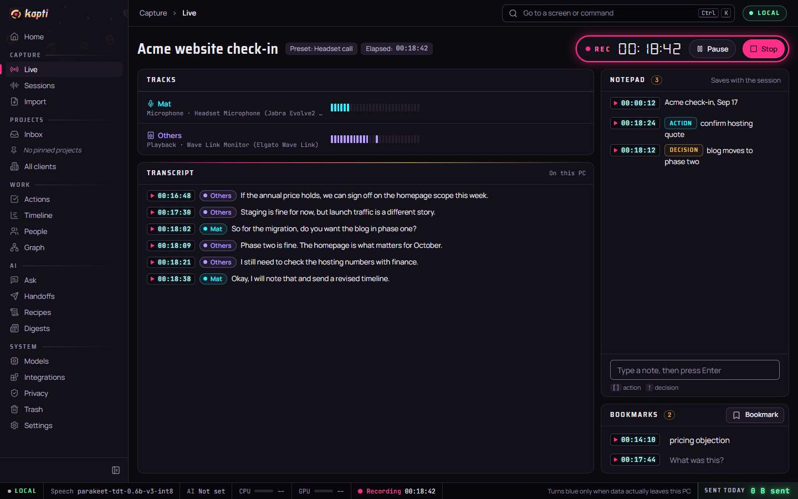
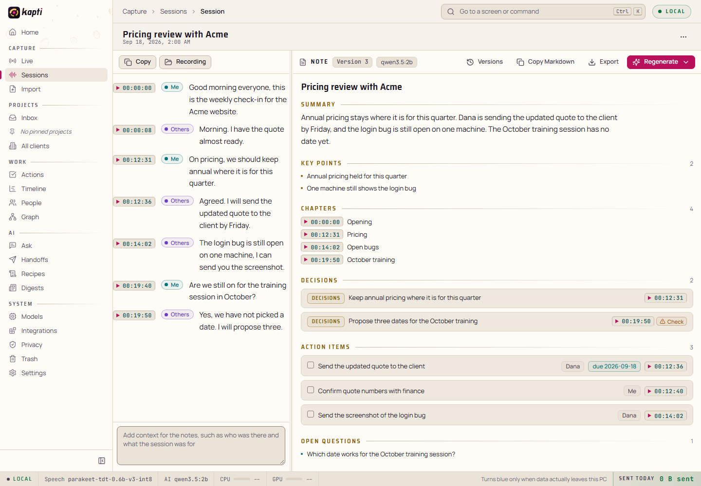
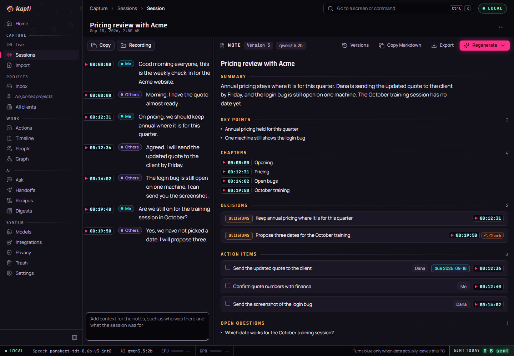

Kapti: a meeting assistant that never phones home
Kapti records a call, transcribes it on your own Windows PC, and writes the notes with a local language model. It can also bring up what you've already written on a topic while the meeting is still going. Nothing leaves the machine unless you turn a cloud engine on. If you do, every request goes through one Rust module that checks an allowlist and logs the request, and CI fails the build if code anywhere else tries to open a socket. I started from a fork of the open-source Meetily v0.4.1 (MIT) and rebuilt most of what matters.




The problem
Most meeting tools send your audio to someone else's server. That's fine until the call is a salary review, a doctor's appointment, or a customer under NDA. The usual workaround is to not record those calls, so the meetings that matter most end up with no record at all.
I wanted the transcription model, the language model, the database and the search index all running locally, and I wanted "local" enforced by the build rather than promised in a settings screen.
What it does
- Records both sides separately. The microphone and system audio are captured as two tracks, so the transcript can attribute lines instead of guessing. It can also capture a single application's audio. If something fails mid-call, audio spools to disk and the transcript is recovered.
- Transcribes on the device with Whisper or Parakeet.
- Writes the note when you stop: summary, decisions, action items and chapters, from templates. Notes keep their versions, so regenerating one never overwrites the previous version, and they export to Markdown.
- Meeting assist. When a subject comes up that you've written about before, it quotes the passage back with a citation. No model is involved, so it is fast and can't invent anything.
- Interview assist. It detects a question aimed at you, retrieves what you've actually written on the subject, and drafts a prompt where every bullet cites its source. Paste a job advert and the prep pack shows which requirements you have evidence for and which you don't.
Architecture
A Tauri 2 shell with a Rust core and a Next.js front end. Audio capture uses WASAPI directly. Speech runs through whisper.cpp or Parakeet. The language model runs in a llama.cpp sidecar process with CPU, CUDA and Vulkan builds. Retrieval uses SQLite FTS5 with BM25 ranking.
What I changed from upstream: the fork audit found mic and system audio summed before transcription, 26 separate network call sites, an updater and an FFmpeg downloader that bypassed the HTTP client, and no CI running tests. I rebuilt the pipeline around separate tracks, routed every connection through the egress module, archived the unused Python/FastAPI backend, and removed FFmpeg (GPL) so imports decode with Symphonia and recordings are WAV files written in Rust. The knowledge base, both assist modes, per-app capture and the gateway are new.
Key decisions
- One gateway for network traffic, checked on every redirect.
egress::remote(feature)builds a client per feature whose redirect policy re-checks the host allowlist and HTTPS on every hop, then writes one log row per request with measured byte counts. Checking redirects stops an approved host from bouncing a download to one that isn't approved. The trade-off is that every new integration has to be registered as a feature before it can send anything, and I think that's the right default. - Keyword search before vectors. Retrieval is SQLite FTS5, not embeddings. FTS5 is already compiled into the bundled SQLite, so it cost no new dependency and no model download, and its results are exact and explainable. Callers use a one-method
ChunkIndextrait, so a vector index can be added later as a second implementation. The cost is weaker matching on paraphrase. - No evidence, no request. If the knowledge base is empty, nothing matched, or the only match is weak, the answer path refuses without building a prompt or calling a model. A self-test proves it with an engine that fails if it is ever called. "The model returned nothing" and "no request was sent" are different guarantees, and only the second holds up.
- Privacy enforced in the SQL, not in the prompt builder. Each source carries a
cloud_eligibleflag, and retrieval drops ineligible sources in the query whenever a cloud engine will write the answer. If the filter lived in the evidence builder, one forgotten caller would be enough to leak. Mail and work folders are written ineligible before their first chunk. - A saved API key is not consent. The key and the enable switch are separate controls, and the egress feature follows the switch. Pasting a key so it's ready for later can't start sending documents anywhere.
Engineering quality
- Tests. 1,144 Rust unit tests, plus
#[ignore]tests that run against real documents and the real local models. Those ignored tests found most of the real bugs: parsers that passed synthetic fixtures and mangled real files, and prompts that worked against a scripted engine and failed against an actual one. - Egress guard. A script scans the Rust, the frontend and the Tauri config for HTTP clients, raw sockets,
fetch, remote URLs, updater or analytics crates, and fails if it finds any outside the egress module. It runs in GitHub Actions on every push and pull request. - Migration lock. Kapti updates in place, so an edited migration would make every existing database refuse to open.
migrations.lockpins a SHA-384 for each of the 19 migrations. A CI job and a Rust test both fail the build if a pinned file changes. - Model supply chain. The only models Kapti may download come from a bundled manifest, with every URL pinned to a Hugging Face commit and a SHA-256 for each file. The sidecar only accepts a process that answers with a fresh per-launch token.
- Measured, not assumed. Measuring the sidecar turned up two real bugs: VRAM detection hardcoded to 4 GB, and a KV-cache estimate that was eight to ten times too high for the hybrid models Kapti ships. Fixing both, running on Vulkan and using the smaller model cut a written answer from 57.5 s to 1.7 s warm. I also documented a run I got wrong: a game was holding most of the GPU, and my first theory about the slowdown was confident and completely mistaken.
What I'd do next
I ran a seven-reviewer audit on the app (architecture, security, data, UX and others), checked every finding against the code, and fixed eight the same day. Roughly one finding in five didn't survive checking. The open items, in order:
- Gate the tests in CI. Only the two guards run today. The unit tests,
tscand clippy are run by hand, and the migration guard runs on one platform only. - Generate the IPC types. 242 commands and 362 hand-written TypeScript mirrors are kept in sync by convention. My most expensive bug was a missing
camelCaserename that turned two fields intoundefinedand quietly disabled recording for a day. The fix ists-rsortauri-specta. - Make failures visible. Too many errors show up as empty screens. Diagnostics now go to a log file, but the UI still needs to tell "broken" apart from "nothing here".
- Finish what's scaffolded: redaction before a cloud request (plumbed through, but nothing calls it yet), PDF import, embeddings, and a code-aware chunker.
- Test with real audio. Every live-assist number so far comes from a text fixture, so none of them include transcription error.
windows crate), whisper.cpp, Parakeet, llama.cpp sidecar (CPU / CUDA / Vulkan), SQLite with FTS5 via sqlx, Symphonia, GitHub Actions, PowerShell build and guard scripts. Windows 10/11. MIT licensed, forked from Meetily v0.4.1 by Zackriya Solutions.